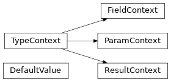

rawtypes.parser.type_context module¶

- rawtypes.parser.type_context.symbol_filter(src: str) str¶
fix python reserved word
- class rawtypes.parser.type_context.TypeContext(type: rawtypes.clang.cindex.Type, cursor: rawtypes.clang.cindex.Cursor)¶
ベースクラス:
object- cursor: rawtypes.clang.cindex.Cursor¶
- static get_struct_methods(cursor: rawtypes.clang.cindex.Cursor, *, excludes=(), includes=False) List[rawtypes.clang.cindex.Cursor]¶
- static get_constructors(cursor: rawtypes.clang.cindex.Cursor) List[rawtypes.clang.cindex.Cursor]¶
- static get_default_constructor(cursor: rawtypes.clang.cindex.Cursor) Optional[rawtypes.clang.cindex.Cursor]¶
- property name: str¶
- property is_void: bool¶
- property is_const: bool¶
- property is_anonymous_field: bool¶
- class rawtypes.parser.type_context.DefaultValue(tokens: List[str])¶
ベースクラス:
object- static create(cursor: rawtypes.clang.cindex.Cursor) Optional[rawtypes.parser.type_context.DefaultValue]¶
- property cpp_value: str¶
- property py_value: str¶
- class rawtypes.parser.type_context.ParamContext(index: int, cursor: rawtypes.clang.cindex.Cursor)¶
ベースクラス:
rawtypes.parser.type_context.TypeContext- index: int¶
- default_value: Optional[rawtypes.parser.type_context.DefaultValue]¶
- static get_function_params(cursor: rawtypes.clang.cindex.Cursor) List[rawtypes.parser.type_context.ParamContext]¶
- class rawtypes.parser.type_context.FieldContext(index: int, cursor: rawtypes.clang.cindex.Cursor)¶
ベースクラス:
rawtypes.parser.type_context.TypeContext- index: int¶
- static get_struct_fields(cursor: rawtypes.clang.cindex.Cursor) List[rawtypes.parser.type_context.FieldContext]¶
- class rawtypes.parser.type_context.ResultContext(cursor: rawtypes.clang.cindex.Cursor)¶